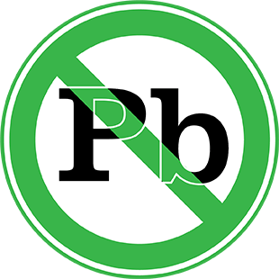

- Cathode
- Anode
- Cathode
包裝方式
料號 :
AS6502A
封裝 :
TO-220AC-2L
單位數量 :
240
最小包裝數量 :
30
包裝形式 :
Tube
功能特色
- Low Forward Voltage (VF)
- Shorter recovery time
- High speed switching
- High surge current capability
- Enabling higher frequency and increased power density
- System efficiency improvement
- System cost and size savings due to the reduced cooling requirements
應用領域
- Power Factor Correction in SMPS
- Solar inverter
- Uninterruptible Power Supply
- EV Charging Stations
- Data Center
認證標章
